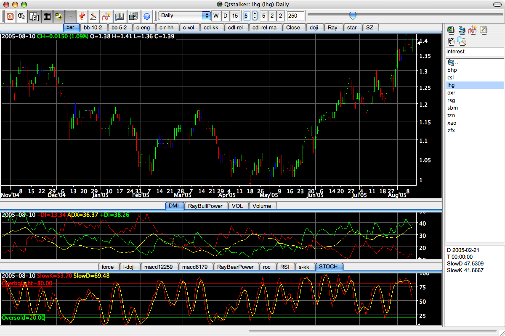
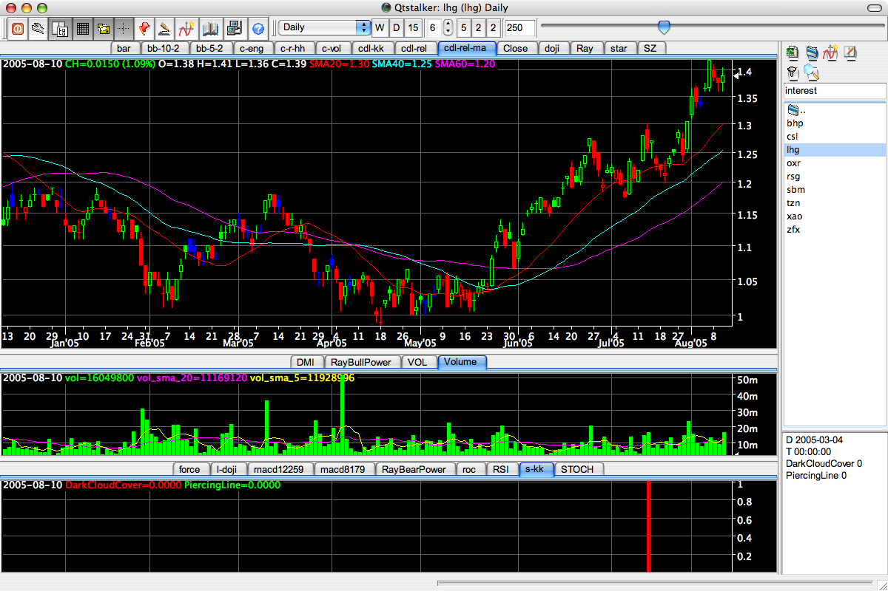

2008-04-19 Release 0.36
Qtstalker is a user friendly Technical Analysis package for GNU/Linux (and hence other Unix-like systems). Similar to commercial wares such as Metastock and Tradestation. Keeps to a lean, simple design for speed, portability, and low resource usage.
Qtstalker is 100% free software, distributed under the terms of the GNU GPL. An active development community is continually adding new features. We appreciate your input towards creating a world-class GNU/Linux TA package.
Features
- A point-and-click object-oriented graphical user interface.
- Chart types include line, bar and candlestick.
- Customizable colors. Logarithmic and linear arithmetic scaling. Scale to screen.
- Indicators include MACD, MAs, Bollinger Bands, RSI, and dozens more. Provides access to the TA-Lib library of common functions.
- A scripting facility to create custom indicators using perl, python or any popular scripting language. This powerfully enables combination of different plots in one indicator and combining of other indicators and calculations.
- That scripting facility enables importing CSV quotes into a user managed sqlite database.
- Chart drawing objects: trendlines, buy/sell arrows, horizontal and vertical lines, fibonacci retracement lines and text.
- Minute, daily, weekly and monthly charts.
Screenshots
|  |  |
{kind=link}
{kind=link}